Code | Tutorial | Image |
|---|---|---|
TR0001 | Complete WorkFlow Complete workflow, from photos to pieces to cuts | 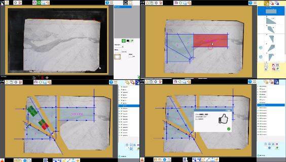 |
TR0002 | Cut management and PGM file Piece cut management and PGM file generation. | 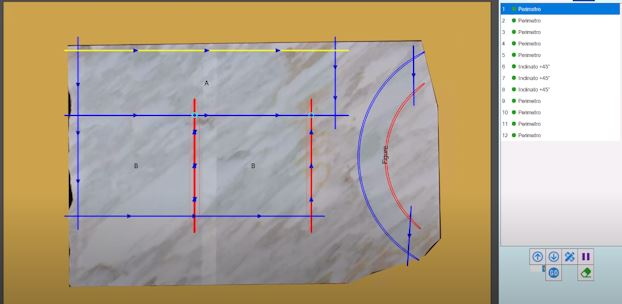 |
TR0003 | Photo Take picture from camera or from file and take perimeter with avoid area. | 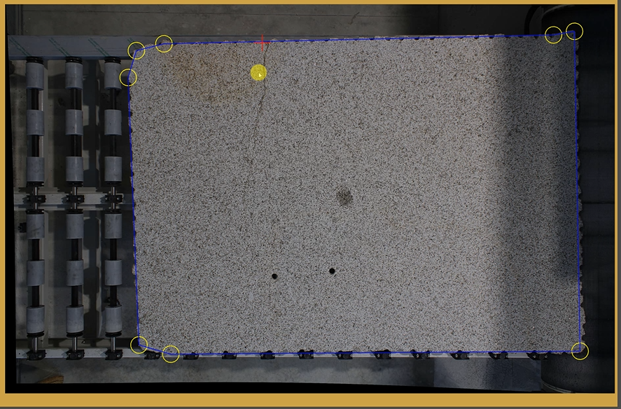 |
TR0004 | Piece Creation How create square piece, import DXF o CSV file, create parametric piece from figure. |  |
TR0005 | Piece Management How to move and rotate the pieces, use the magnet system and apply the mitter cuts. | 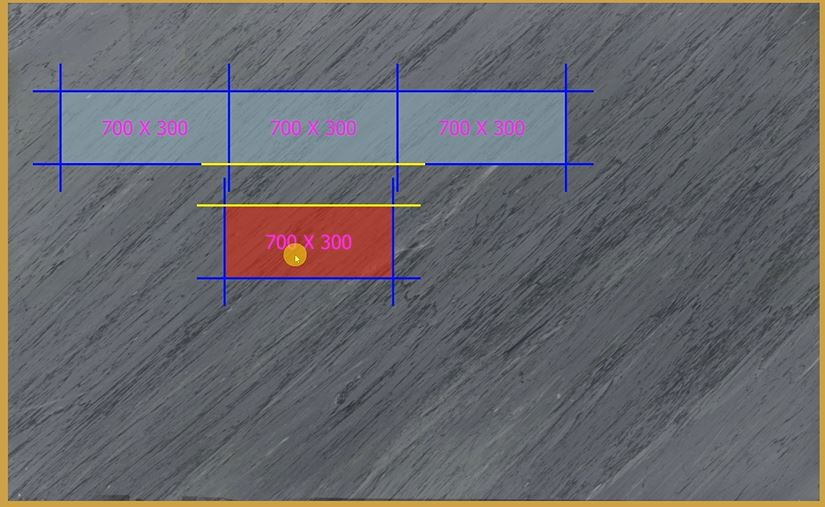 |
TR0006 | Automatic Move How to use the move auto system. | 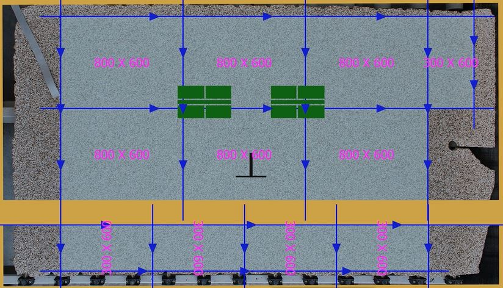 |
TR0007 | Manual Move How to use move manual by selecting the cuts. | 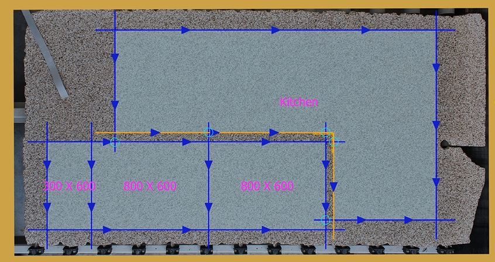 |
TR0008 | Book Match How to create a book match configuration working on the machine. |  |
TR0009 | Multi Slab Project Creation How to create a project with many slabs and place the pieces on the slabs. | 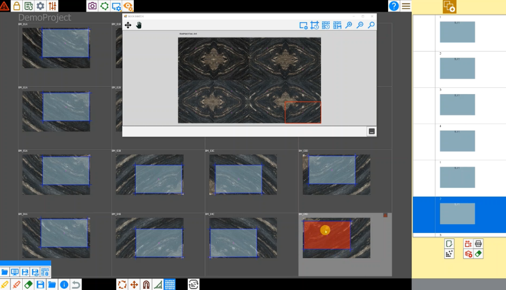 |
TR0010 | Multi Slab Open Workings How to open the workings of a saved multi slab project. |  |
TR0011 | Multi Slab Performance Example of a project with many slabs to manage. |  |
TR0012 | Csv Jobs Example how to use the additional properties in the CSV for manage jobs. |  |
TR0013 | Help System How to activate the help system on the machine. | 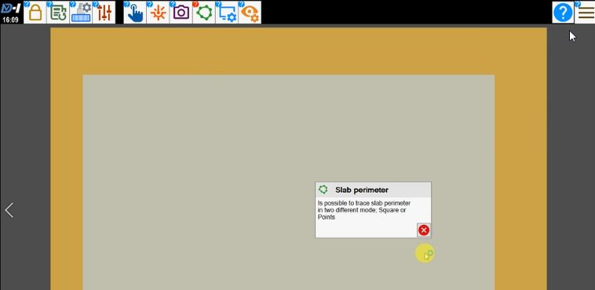 |
TR0014 | Workings from DXF Layers How to import a DXF file with workings defined on layers. | 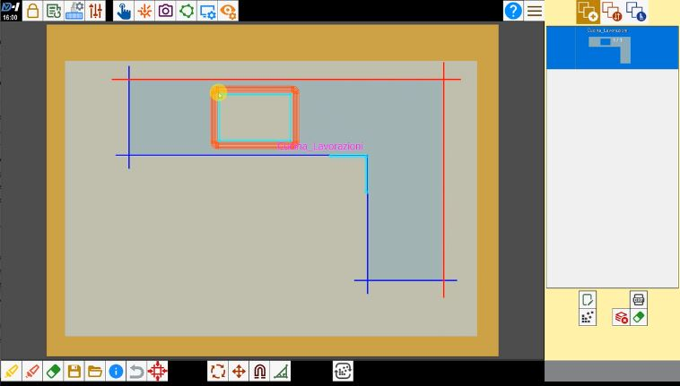 |
TR0015 | Workings from Modify Piece How to use modify piece window to insert workings. |  |
TR0016 | Workings from Modify Piece Kitchen How to use modify piece window to insert workings to kitchen top. |  |
TR0017 | Office Work Flow How to use the software in office mode, sync tools and create the working. | 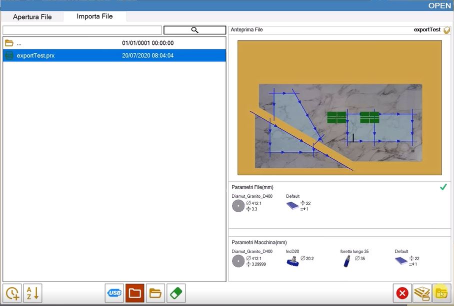 |
TR0018 | Slab Matching How to use slab matching to overlap a working created the office on a slab loaded on machine. |  |
TR0019 | Combine Cuts How to create a series of cuts on the slab. | 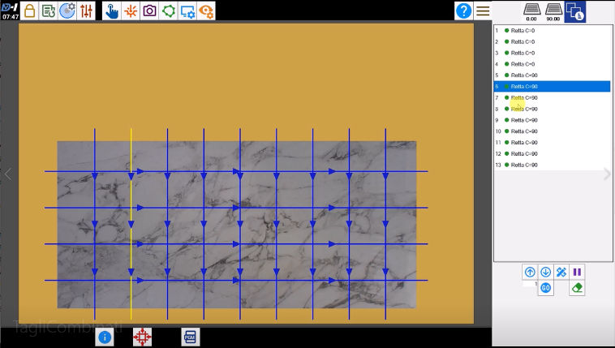 |
TR0020 | Standard Piece Can create and manage rectangular standard pieces with a very high quantity, which are used during nesting to create standard pieces or to use leftover slab scraps. |  |
TR0021 | Nesting How work with nesting and avoid area. | 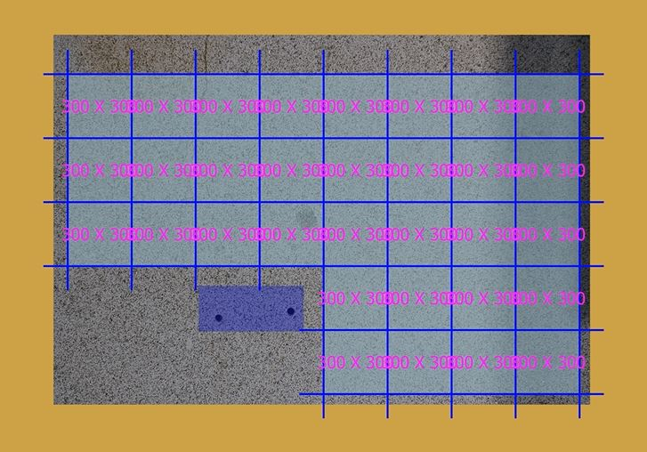 |
TR0022 | DXF Layout Import How to import a cuts layout from DXF with slab perimeter. |  |
TR0023 | DXF Layout Import How to import a cuts layout from DXF with slab perimeter using slab matching. | 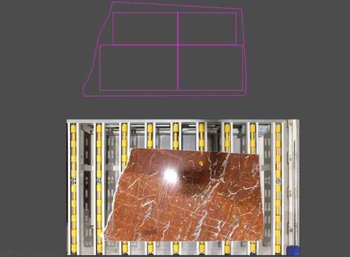 |
TR0024 | Statistics How to view statistics and export reports. |  |